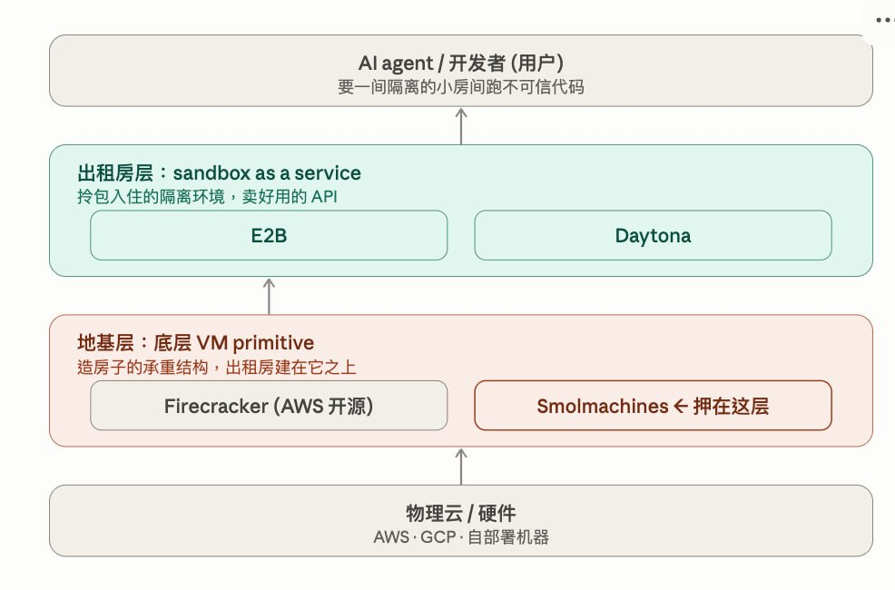

内核边界三次上移：裸机 → 虚拟机 → 容器 → Sandbox
Smolmachines 不是又一个 sandbox API，而是在赌 AI agent 时代需要一层新的 portable microVM 计算地基。这页先用一句话讲清项目定位，再展开共同投资逻辑、主要风险、技术分层与行业研究。
Smolmachines 想做 AI 时代的一层新“计算地基”：让任何一段软件，尤其是 AI agent 自动生成、没人预先审过的代码，都能在一个又快、又安全、又能打包带走的隔离小空间里运行。
如果今天的云服务器像一间需要提前装修、按固定规格付租金的房子，Smolmachines 想做的是一种能瞬间弹出、用完即拆、还能整间打包带走的智能房间。它不是直接对标 E2B / Daytona 那类“出租房服务”，而是试图成为它们下面的新地基。
我们的判断：这不是一个已经被收入证明的 growth deal，而是一个值得小额参与、持续跟踪、可能拿到早期 access 的底层 infra option。赢的前提是：agent workload 真的需要可移植、可 fork、VM 级隔离的 runtime，并且 Smolmachines 能跨过 production trust。
适合用“小额 access + 持续验证”的方式参与：不是押它今天已经赢，而是押它在 agent infra 栈里切到了一个可能被低估的底层位置。
想象每个 AI agent 就像一个刚招进来的实习生，你让它自己写代码、自己跑代码。问题是：它写的代码你没看过，可能有 bug，甚至可能一条命令就把整台电脑的文件删光。你肯定不敢让这个实习生直接在自己的电脑上乱跑。
所以你需要给它一间隔离的小房间：让它在里面随便折腾，把房间拆了都行，但绝不能碰到房间外面真正重要的东西。跑完了，房间一拆，干净利落。这个“小房间”就是 sandbox。
E2B 做的事，就是把这种小房间当成云服务出租。开发者不想自己搭隔离环境，于是调用 E2B 的 API，一行代码，云端秒开一间房，agent 在里面跑代码，跑完拆掉。它卖的是“成熟、省心、API 好用”。

.smolmachine 文件，像把房子连同家具塞进箱子搬走。E2B 现在就在收钱，价值是成熟和省心：客户要一个企业敢用的隔离执行环境，直接调 API。
Smolmachines 赌的是更底层的位置：如果 agent 时代真的需要可打包、可秒开、可低成本复制、本地云端一致的虚拟机，它可能成为新一层基础设施。地基一旦盖成，壁垒很深；但能不能盖成、客户敢不敢把生产业务放上来，是最大未知数。
每一代虚拟化的跃迁，都是把"共享什么"和"隔离什么"的边界重画一次。驱动力始终一样：新租户的可信度下降。裸机时代你信任全部代码；容器时代你信任自己写的代码；agent 时代，代码是 LLM 现写的，你一行没读过。
"做更轻的方案该砍哪层隔离"没有标准答案，只有一条连续光谱：每砍一层，换来更快的冷启动和更高的密度,但逃逸所需的漏洞类别也少一类。行业据此分裂成三种赌注,差异不在好坏,而在威胁模型与负载形态是否匹配。
赌"跑陌生人的代码,硬件隔离值这个 GPU 的代价"。逃逸要先破 guest kernel 再破 hypervisor,两类完全不同的攻击面。
赌"绝大多数 agent 负载不是对抗性的,user-space 拦截够用",换来 Firecracker 给不了的原生 GPU。
赌"27–90ms 的极速 provisioning 比深度隔离更能定义长程有状态工作流",代价是面对对抗性代码时边界最弱。
| 方案 | 隔离边界 | 冷启动 | 内存开销 | 砍了什么换性能 |
|---|---|---|---|---|
| runc 容器 | kernel namespace | ~50ms | ~0 | 砍掉一切硬件隔离 |
| 逃逸需要 — 一个 kernel CVE(如 Dirty Pipe CVE-2022-0847,零 capability 即可提权)。syscall 兼容:全。谁在用:仅可信代码,不适合 agent。 | ||||
| gVisor | user-space kernel(Go Sentry) | ~100ms | 50–100MB | 砍掉部分 syscall 兼容与 10–30% I/O 性能 |
| 逃逸需要 — 先破 Sentry 再破 host kernel。syscall 兼容:约 70%。谁在用:Modal、Google Agent Sandbox。换来原生 GPU 与高密度。 | ||||
| Kata Containers | 硬件 VM(QEMU / Cloud Hypervisor) | 100–300ms | 20–50MB | 保留全兼容,牺牲启动速度与密度 |
| 逃逸需要 — guest kernel + hypervisor escape。syscall 兼容:全。谁在用:Northflank(可选)、企业合规多租户场景。 | ||||
| Firecracker microVM | 硬件 microVM(KVM) | <125ms | 5MB | 砍掉 BIOS/PCI/USB 等设备模拟(仅 4 个 VirtIO) |
| 逃逸需要 — guest kernel + hypervisor escape,攻击面极小。syscall 兼容:全;原生不支持 GPU。谁在用:E2B、Vercel、Sprites、AWS Lambda/Fargate。 | ||||
| V8 isolate | V8 引擎沙箱 | 几 ms | 几 MB | 砍掉整个 OS,只跑 JS |
| 逃逸需要 — V8 引擎漏洞,但 V8 漏洞比 hypervisor 漏洞更常见,需额外纵深防御。比容器快 100x、省内存 10–100x。谁在用:Cloudflare Dynamic Worker Loader。 | ||||
来源:Safeguard.sh(2023-12)、Northflank(2026-01)、Fly.io、Cloudflare(2026-03-24)、Systems Hardening(2026-05-08)。
需求侧不是预测,是已经发生的负载:Lovable 在 48 小时内跑了 100 万个 Modal sandbox。价值最不成比例地沉淀在 L2 独立平台,但 L1 隔离底座(Firecracker、gVisor)全是大厂开源——创造标准≠捕获价值,这正是本赛道最大的投资陷阱。
| 玩家 | 隔离方案 | 规模 / 关键指标 | 融资 |
|---|---|---|---|
| L2 · 独立平台 | |||
| E2B | Firecracker microVM | 1B+ 累计沙箱 · 94% F100 · 7M+ 月下载 | $21M Series A Insight |
| 架构赌注 — Firecracker + 开源协议成事实标准。致命风险:开源变现悖论——若 hyperscaler 兼容其协议,可能重蹈 Docker(人人用、没人付)。关键问题:能否在协议被复制前,把 secrets/监控/合规做成付费企业层。 | |||
| Modal | gVisor | ~$300M 年化 · 40% MoM · sandbox 月翻倍 | $355M Series C @ $4.65B |
| 架构赌注 — gVisor + 比 sandbox 大得多的 compute 平台,唯一原生 GPU(T4–B200)。致命风险:GPU 采购模型脆弱,$4.65B 已透支增长。关键问题:GPU 松动、价格战开打后,护城河能否从"拿得到 GPU"迁移到"开发体验+状态原语"。 | |||
| Daytona | Docker / OCI 共享 kernel | 27–90ms 冷启动 · 72.5K stars · 有状态 | $24M Series A FirstMark |
| 架构赌注 — 极速 provisioning + 有状态 fork/snapshot,赌"状态比隔离更黏"。致命风险:共享 kernel 面对对抗性代码隔离最弱。关键问题:能否在"有状态+Computer Use"建立足够深的迁移成本,让在意安全的客户也不愿迁走。转向后 3 个月达 $1M run rate、6 周翻倍。 | |||
| Runloop | 自研裸机 hypervisor | 10k+ 并发 · 内置 SWE-bench · snapshot-branch | eval 专精 |
| 定位 — agent 评测/基准专精,disk snapshot(git for sandboxes)+ 内置 SWE-bench,是 coding-agent 团队跑 eval 的默认选择。对应容器时代的 Datadog 路径。 | |||
| Northflank | Kata / gVisor / Firecracker 可选 | 2021 至今生产 · H100 $2.74/hr · BYOC 跨 5 云 | 完整生产栈 |
| 定位 — BYOC 跨 5 云 + 完整生产栈,与 hyperscaler 捆绑正交。受监管企业要多云中立和数据主权,正好卡这个位。对应 HashiCorp 路径。 | |||
| Sprites(Fly.io) | Firecracker | 300ms checkpoint · COW 增量 · 零 idle 计费 | 属 Fly.io |
| 定位 — 有状态 + transactional checkpoint,瞄准 RL rollout 与长程 agent 的状态持久化。fork/checkpoint 是 agent 运行时迁移成本最高的部分。 | |||
| L3 · Hyperscaler 捆绑 | |||
| AWS AgentCore | microVM-per-session | 8h 会话 · CloudTrail · VPC/PrivateLink | AWS |
| 双面性 — 企业合规外壳无人能及;但 2026-03 被 BeyondTrust/Sonrai 公开"压力测试"——默认网络模式 DNS 可外泄、metadata service 可提凭证。教训:"sandbox"这个词本身不是安全保证,隔离声明必须被独立验证。 | |||
| Google Agent Sandbox | gVisor | 亚秒冷启动 · 14 天 TTL | |
| 定位 — Gemini Enterprise 的执行层,2026-04 announce、7/1 起计费。hyperscaler 集体入场是成长期信号,也是独立厂商定价压力的来源。 | |||
| Cloudflare Sandbox | 容器 + V8 isolate | Active-CPU 定价 $0.00002/vCPU-sec | Cloudflare |
| 定位 — agent 等 LLM 响应时不计费的 active-CPU 定价,改善单位经济学,也压无状态纯执行玩家的利润。isolate 比容器快 100x。 | |||
| Vercel Sandbox | Firecracker | Node/Python · 45min–5h 会话 | Vercel |
| 定位 — "跑你没写过的代码最安全的方式",2026-01 GA,绑定 Vercel 部署平台的现成分发。 | |||
来源:VentureBeat/E2B blog、TBPN Digest/Sacra、Daytona/PRNewswire、Ry Walker Research、AgentMarketCap(2025–2026)。GetLatka 的 E2B "$1.5M ARR/bootstrapped" 与 $21M Series A 矛盾,判为过期数据,未采用。
RL 后训练正从游戏模拟器转向真实有状态环境:Tree-GRPO 需要从 checkpoint 分叉 rollout。这凭空造出一个 fork/snapshot 的需求类别——一种新负载形态需要一种新原语,而 hyperscaler 的通用产品恰恰最不擅长精细的 fork/checkpoint 语义。
判断:CONDITIONAL YES。对一支 $200M 基金,配 4–6 注、每注 $3–8M,Series A 为主。三个硬条件:不投无状态通用 API、必须 Series A 入场(Modal 已贵)、标的须具备至少一项与捆绑正交的护城河。
首选子赛道,押 fork/checkpoint 把 agent 工作记忆变成最高迁移成本。
与 hyperscaler 捆绑正交,参照 HashiCorp 的中立性退出路径。
高风险高壁垒,需绑定清晰的 L2 变现路径,避免重蹈 Docker。
参照 Datadog 的"运维刚需独立成市",预留 1 注跟投权给最佳标的 B 轮。
Smolmachines 的核心不是再做一个 cloud sandbox API，而是把微型虚拟机变成开发者可以本地运行、云端部署、单文件携带的 runtime primitive。对 AI agent 来说，它解决的是同一个问题：模型生成的代码越来越不可信，但执行环境仍需要足够快、可复制、可迁移。
Smolmachines 试图把软件、依赖和运行状态打包成可移植的 .smolmachine，让 agent / developer workload 可以在本地、云端或自部署环境中用同一套 VM artifact 运行。
AI agent 会频繁执行用户没读过、模型即时生成的代码。传统 container 共享 host kernel，安全边界不够硬；传统 VM 又太重。Smolmachines 押注的是：agent 时代需要一个介于 Docker 易用性和 Firecracker 隔离性之间的新 runtime。
smolvm CLI，跨 macOS / Linux / Windows。这不是一个已经被数据证明的 growth deal，而是一个底层 infra call option。赛道 beta 来自 agent sandbox 需求真实增长；公司 alpha 来自“portable VM as container replacement”的开发者心智。如果它能从 demo 速度走到 production trust，早期估值下有不对称性；如果做不到，就容易被 E2B、Daytona、Modal、Vercel、Cloudflare 或 AWS 变成一个 feature。
Smolmachines 的差异点在于“更底层、更本地、更可移植”；短板在于生产信任、客户规模和团队厚度仍早。
| 玩家 | 更强的地方 | Smolmachines 的相对机会 |
|---|---|---|
| Smolmachines | local-first portable microVM；开源传播；VM-level isolation | 若成为 agent developer 默认 runtime，位置比单点 sandbox API 更底层 |
| E2B | 成熟 cloud sandbox API、SDK、企业采用和融资更强 | Smol 更强调本地/云一致和 artifact ownership |
| Daytona | 开发者社区和 agent computer 心智很强 | Smol 更偏底层 VM runtime，而不是完整 dev environment |
| Modal | 收入、客户、GPU supply、平台能力全面领先 | Modal 更平台化，Smol 可切更轻的 developer primitive |
| Runloop | coding-agent eval / deployment 场景更直接 | Smol 可覆盖更宽的 portable software / local VM 场景 |
| AWS / Vercel / Cloudflare | 生产信任、分发、合规、客户入口明显更强 | 大厂产品往往绑定云生态，未必给开发者中立的 portable VM artifact |
注：融资、客户、收入等数据为公司沟通与公开资料整理，按“需进一步验证”的早期判断处理。